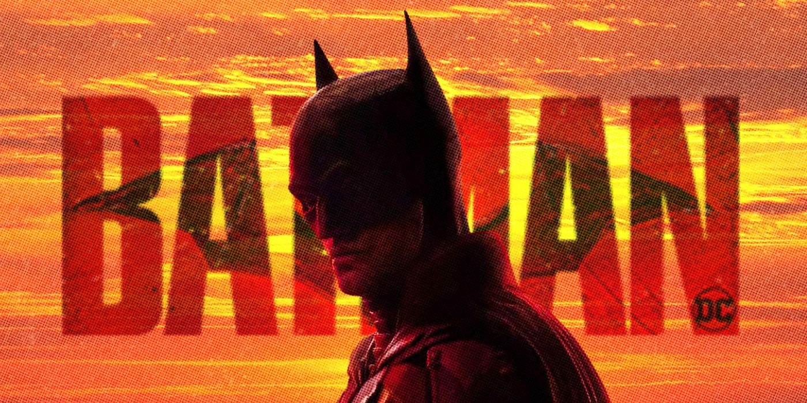

Batman

Batman, the iconic vigilante of Gotham City, stands tall as the enigmatic Dark Knight, embodying the ideals of justice and fearlessness. Born as Bruce Wayne, a wealthy heir to the Wayne family fortune, his life took a dramatic turn after witnessing his parents' tragic murder in the depths of Crime Alley. This event ignited an unyielding desire to fight crime and avenge the innocent, leading him down a path of relentless training and transformation into the caped crusader Gotham deserved.
In his quest for justice, Bruce sought guidance from the mysterious League of Shadows, mastering various combat techniques and harnessing his fears to become more than just a man. Armed with unparalleled determination, advanced gadgets, and a vast fortune, he returned to Gotham as Batman, an entity that struck fear into the hearts of criminals.
Batman faced a myriad of formidable adversaries, forming his legendary rogues' gallery. From the enigmatic and calculating Joker to the seductive yet deadly Poison Ivy, and the relentless mercenary Bane, each adversary tested the Dark Knight's intellect, resilience, and indomitable spirit.
Though a solitary figure by nature, Batman found solace and strength in an unlikely yet powerful family. Taking orphaned Dick Grayson under his wing, Bruce trained him as the acrobatic crime-fighter Robin. Over the years, Batgirl, Nightwing, Red Hood, and other allies joined his cause, creating the Bat-Family, a team that exemplified unity and hope in the darkest of times.
Outside of Gotham, Batman forged vital alliances with other superheroes in the Justice League, earning their respect and contributing his strategic brilliance to save the world from catastrophic threats.
Commissioner James Gordon, a staunch ally, trusted Batman as Gotham's silent guardian. Together, they utilized the iconic Bat-Signal to summon the Dark Knight in times of dire need, reinforcing his unwavering commitment to protecting the innocent and upholding justice.
Beyond the cowl, Bruce Wayne epitomized philanthropy, using Wayne Enterprises to fund various charitable initiatives. He also served as a beacon of hope, inspiring countless citizens to stand up against injustice and fight for a better Gotham.